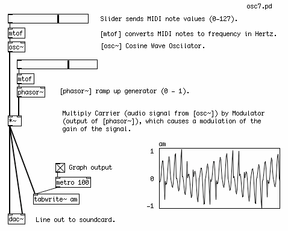
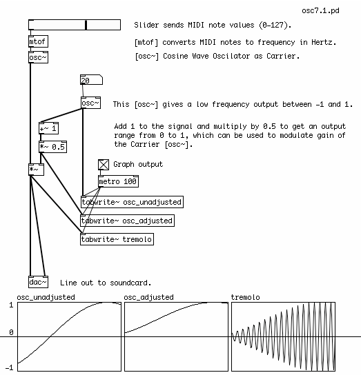

Amplitude Modulation
Amplitude Modulation Synthesis is a type of sound synthesis where the gain of one signal is controlled, or modulated, by the gain of another signal. The signal whose gain is being modulated is called the "carrier", and the signal responsible for the modulation is called the "modulator". In classical Amplitude Modulation, or AM Synthesis, both the modulator and the carrier are oscillators. However, the carrier can also be another kind of signal, such as an instrument or vocal input. Amplitude Modulation using a very low frequency modulator is known as Tremolo, and the use of one audio signal to Amplitude Modulate another audio signal is known as Ring Modulation.
Simple AM Synthesis
Classical AM Synthesis is created by using one oscillator to modulate the gain of another oscillator. Because we are changing the gain of the carrier oscillator from 0 (no gain) to 1 (full gain), the modulating oscillator must output a signal which changes between 0 and 1. This is most often done at audio frequency rates from 20 Hz and up. In this case, the sawtooth waveform of a [phasor~] is used as the modulator, and the sine waveform of an [osc~] is the carrier.

Tremolo
Tremolo is a form of Amplitude Modulation where the gain of an audio signal is changed at a very slow rate, often at a frequency below the range of hearing (approximately 20 Hz). This effect is commonly used to alter the sound of organs or electric guitar.
Since a sine wave is often used for a smooth-sounding tremolo effect, in this patch we have taken the output of an [osc~], which normally moves between -1 and 1, and scaled it so that it's output is now from 0 to 1. This is known as adding a DC Offset to the signal. For more discussion on this, please see the chapter on DC Offset.

Ring Modulation
You can also modulate one audio signal with another audio signal (i.e. a signal which has both positive and negative values). This effect is called Ring Modulation. If you have a microphone connected to your computer, try the following patch. The sound of your voice will enter Pd through the Analog to Digital Converter [adc~] object (the line in from the soundcard), and be modulated by the sine wave of a [phasor~] object. Notice that there is no sound when only one audio signal is present (i.e. when you are not speaking). This is because one audio signal multiplied by zero (no audio signal) will always be zero. And the louder the input signal is, the louder the output will be.

The Ring Modulation effect was often used in Science Fiction movies to create alien voices. You may want to use headphones when running a microphone into Pd to prevent feedback (the output of the speakers going back into the microphone and making a howling sound).